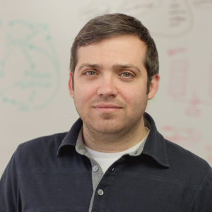

Hi. I'm Jeff Spies.
By education, I am a computer scientist, statistician, and psychologist. I have a Ph.D. in Quantiative Psychology.
I am an entrepreneur. I co-founded the Center for Open Science (COS), a non-profit tech company that has raised $26M to date. Our flagship product, the Open Science Framework (OSF), was my dissertation project.
I am a technologist. I'm the Chief Technology Officer at COS, where I am responsible for software architecture, technology strategy, product vision, and external partner/funder development (with a focus on the technical). I also manage an R&D team—COS Labs.
I am a software architect. I focus on incremental, modular, abstracted, scalable solutions.
I am a developer. I stay current on most things having to do with web architecture, programming, and deployment. That's often more reading than writing code, but I'm strict about it.
I am a scientist, although in practice I focused more on building tools in order to help others do their science more efficiently. I incorporate scientific methodology and testing as well as an understanding of the psychology of incentives and biases in all of my work—technology and product development included. When I was actually doing science, I studied information visualization, time-series analysis, autism, non-verbal communication, and motor control.
I am a librarian. OK, not technically, but I co-lead the SHARE project, a partnership between COS and the Association of Research Libraries. I am oddly drawn to digital archival, preservation, and metadata. I believe the library is the key to improving scholarship and should play a central role on campuses.
I am an openness advocate. Open source, open science, open scholarship, etc. It solves many of the problems in the sciences, and it will make research more efficient, of higher quality, and more accessible. And openness fosters inclusivity. That will make science better.
I am an educator. I currently hold an Asst. Professor position at the University of Virginia in the Dept. of Engineering and Society. I also created and direct COS's internship program using a pedagogy I developed while teaching at Notre Dame to acheive increased learning effiency by focusing on learning how to learn in a service-learning setting with particular attention paid to acknowledging imposter effect and making frustration work for rather than against the learner. Engineering can be far more diverse than it is.
I am most motivated by increasing efficiency. Openness is great, but increasing openness in scholarship is in service of increased research efficiency, quality, and accessibility. The resources (e.g., funding, time) going into curing diseases like cancer should be maximized. I build tools because it allows me to help others be more efficient.